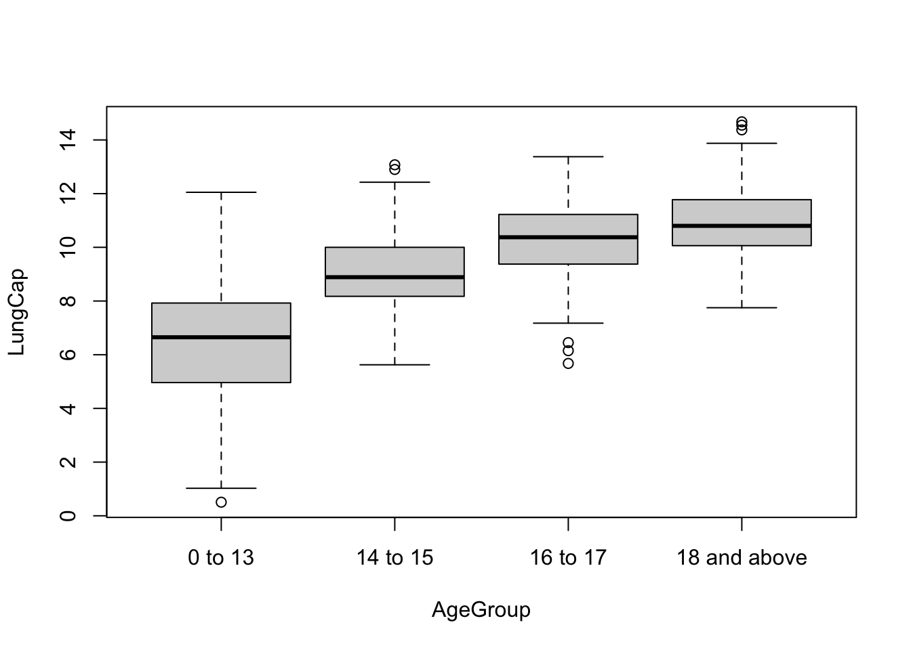
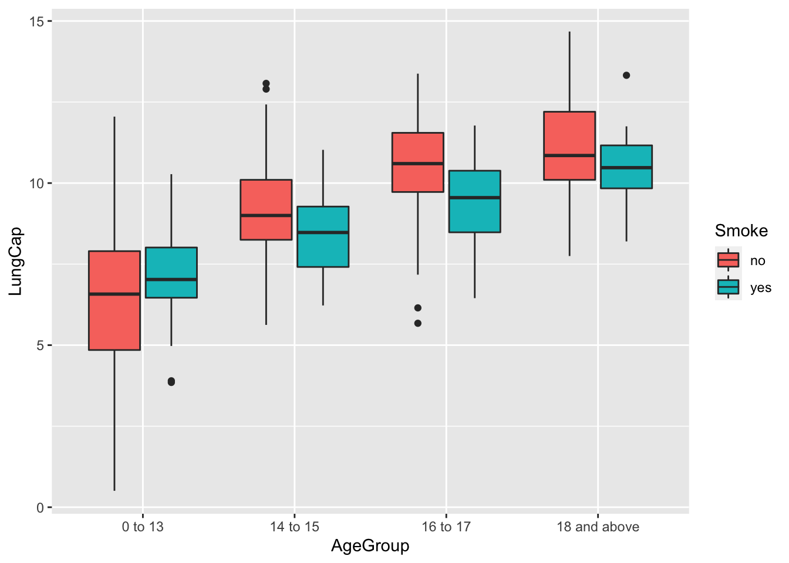

Code
library(readxl)
df <- read_excel("_data/LungCapData.xls")First, let’s read in the data from the Excel file:
library(readxl)
df <- read_excel("_data/LungCapData.xls")The distribution of LungCap looks as follows:
hist(df$LungCap)
The histogram suggests that the distribution is close to a normal distribution. Most of the observations are close to the mean. Very few observations are close to the margins (0 and 15).
Compare the probability distribution of the LungCap with respect to Males and Females?
suppressPackageStartupMessages(library(dplyr))
boxplot(LungCap~Gender, data=df)
The boxplot suggests that males tend to have a slightly higher lung capacity than females. While the mean of both genders is close to each other (~8), males’ interquartile range is slightly higher (approximately from 6.5 to 10) when compared to the females’ (approximately from 6 to 9).
Compare the mean lung capacities for smokers and non-smokers. Does it make sense?
df %>%
group_by(Smoke) %>%
summarise(mean = mean(LungCap), n = n())# A tibble: 2 × 3
Smoke mean n
<chr> <dbl> <int>
1 no 7.77 648
2 yes 8.65 77Smokers have a mean lung capacity of 8.65, versus non-smokers who have a lung capacity of 7.77. These results do not make sense, as we would expect non-smokers to have greater lung capacity.
Examine the relationship between Smoking and Lung Capacity within age groups: “less than or equal to 13”, “14 to 15”, “16 to 17”, and “greater than or equal to 18”.
age_groups <- df %>%
mutate(
# Create categories
AgeGroup = case_when(
Age <= 13 ~ "0 to 13",
Age == 14 | Age == 15 ~ "14 to 15",
Age == 16 | Age == 17 ~ "16 to 17",
Age >= 18 ~ "18 and above"
),
# Convert to factor
AgeGroup = factor(
AgeGroup,
level = c("0 to 13", "14 to 15","16 to 17", "18 and above")
)
)
boxplot(LungCap~AgeGroup, data=age_groups)
The boxplot suggests that the greater the age, the greater the lung capacity. This is especially evident when comparing the lowest age group (0-13) versus the rest of them, but between the two oldest age groups (16-17 vs 18+), this is the least evident. This makes sense as the greatest physical growth usually happens earlier in life - from childhood to puberty - but then this slows down in the late teens and it almost entirely stops during young adulthood.
Compare the lung capacities for smokers and non-smokers within each age group. Is your answer different from the one in part c. What could possibly be going on here?
library(ggplot2)
age_groups %>% ggplot(aes(x=AgeGroup, y=LungCap, fill=Smoke)) + geom_boxplot()
The answer is different than what I found in 1.C. I previously found that the lung capacity mean for non-smokers was less than the smoking counterpart; however, this new box plot suggests that most non-smoking age groups actually have better lung capacity than smokers. The only age group where this condition isn’t met is in the youngest ages (0-13) so it is likely that this group that is skewing the overall smoker versus non-smoker analysis.
Let X = number of prior convictions for prisoners at a state prison at which there are 810 prisoners.
x = 0, 1, 2, 3, 4; frequency = 128, 434, 160, 64, 24.
What is the probability that a randomly selected inmate has exactly 2 prior convictions?
160/810 = .1975 = 19.75%
What is the probability that a randomly selected inmate has fewer than 2 prior convictions?
(128+434)/810 = 562/810 = .6938 = 69.38%
What is the probability that a randomly selected inmate has 2 or fewer prior convictions?
(128+434+160)/810 = 722/810 = .8914 = 89.14%
What is the probability that a randomly selected inmate has more than 2 prior convictions?
(64+24)/810 = 88/810 = .1086 = 10.86%
What is the expected value for the number of prior convictions? (The expected value of a discrete random variable X, symbolized as E(X), is often referred to as the long-term average or mean)
(0*128/810) + (1*434/810) + (2*160/810) + (3*64/810) + (4*24/810) [1] 1.28642Calculate the variance and the standard deviation for the Prior Convictions.
Below is the variance:
((0-1.28642)^2 * 0) + ((1-1.28642)^2 * .5358) + ((2-1.28642)^2 * .395) + ((3-1.28642)^2 * .237) + ((4-1.28642)^2 * .1185)[1] 1.813581And below is the standard deviation:
sqrt(((0-1.28642)^2 * 0) + ((1-1.28642)^2 * .5358) + ((2-1.28642)^2 * .395) + ((3-1.28642)^2 * .237) + ((4-1.28642)^2 * .1185))[1] 1.346693